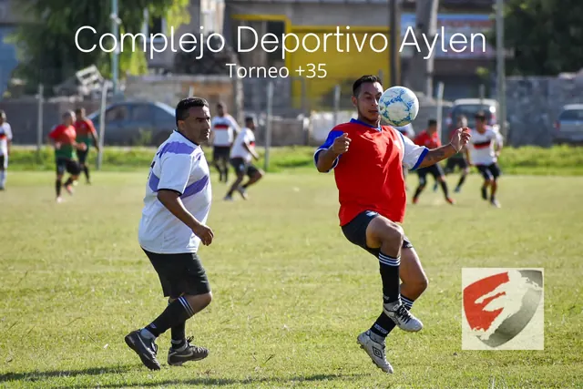
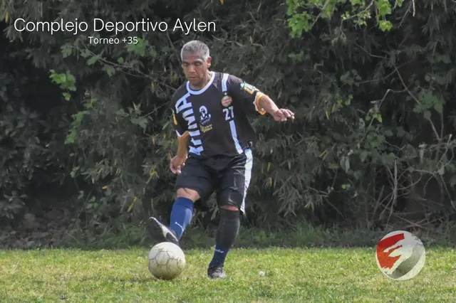
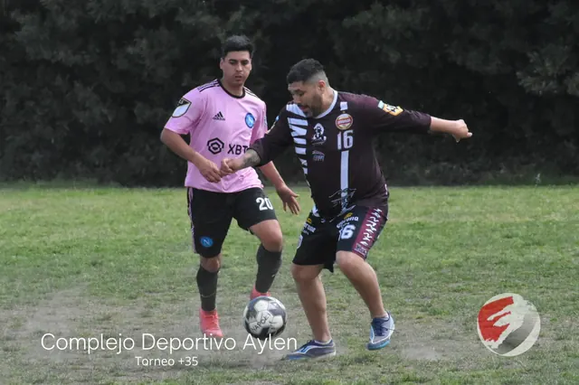
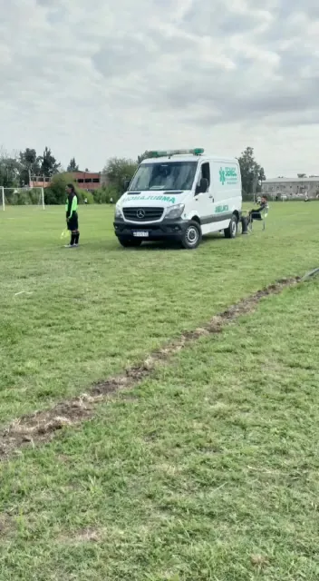
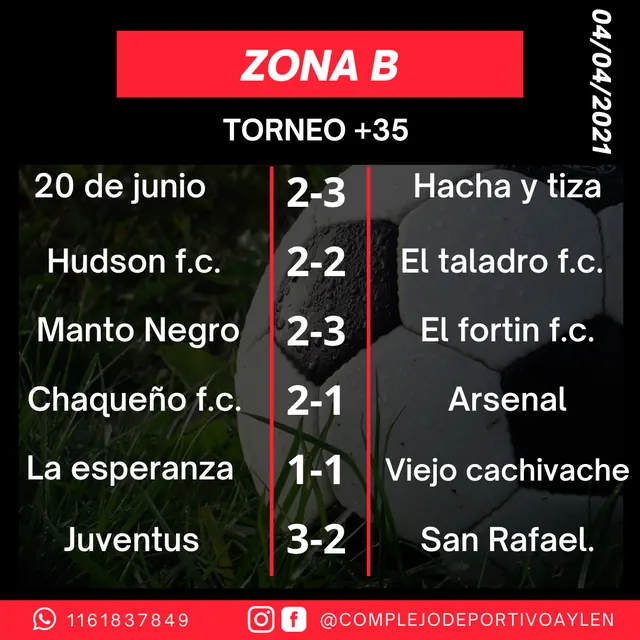

Complejo Deportivo Aylen · Sourigues
Tu partido del finde, en Aylen.
6 canchas de fútbol 11, Torneo +35 los domingos, vestuarios, buffet y servicio médico. En Camino General Belgrano 3877, Sourigues.
- Horario · Sáb 12–21 · Dom 8–21
- 📍 Cno. Gral. Belgrano 3877

El complejo
Canchas y servicios
6 canchas de fútbol 11
De césped natural, para partidos, liga y torneos.
Torneo +35
Fútbol 11 los domingos, con zonas y fechas. ¡No te quedes afuera!
Vestuarios
Para cambiarte antes y después del partido.
Buffet
Algo para comer y tomar en el predio.
Fotos y filmaciones
De los partidos: las “fotitos del domingo” salen en las redes.
Servicio médico
“La salud primero”: hay ambulancia en el complejo.
Alquiler de cancha
[sí/no · valor por hora] Consultá disponibilidad por WhatsApp.


Horarios del complejo
| Lunes a viernes | Cerrado confirmar |
|---|---|
| Sábado | 12:00 a 21:00 |
| Domingo | 08:00 a 21:00 |

Fuentes: página de Facebook y publicaciones del complejo (@complejodeportivoaylen) y ficha de Google (3,9★, 375 reseñas).
Torneo +35 · Fútbol 11
¡No te quedes afuera!
Se juega los domingos, con zonas (B y C en 2021), fechas y resultados. Acá quedarían siempre a mano, sin tener que preguntar.
Horarios de los partidos eran estos en 2021: confirmar
- 8:45 h
- 10:30 h
- 12:00 h
Categorías y valor de inscripción: [completar]

Resultados reales de la Zona B (04/04/2021), tal como los publicó el complejo. En la web irían los de cada fecha. [fixture actual]
Preguntas frecuentes
Antes de escribir
¿Qué días abre el complejo?
Sábados de 12 a 21 h y domingos de 8 a 21 h.
¿Cuántas canchas hay?
6 canchas de fútbol 11.
¿Cómo me sumo al Torneo +35?
Escribí por WhatsApp al 11 6183-7849 con el nombre del equipo. Se juega los domingos.
¿Hay servicio médico?
Sí: el complejo cuenta con servicio médico y ambulancia.
¿Hay vestuarios y buffet?
Sí, hay vestuarios y buffet en el predio.
¿Se puede alquilar una cancha suelta?
[sí/no · valor por hora] Consultá disponibilidad por WhatsApp.
Ubicación y contacto
Cómo llegar
- Dirección
- Camino General Belgrano 3877, Sourigues, Berazategui
- 11 6183-7849
Ojo: en algunas fichas de Google figura como 3799; la dirección correcta es 3877.